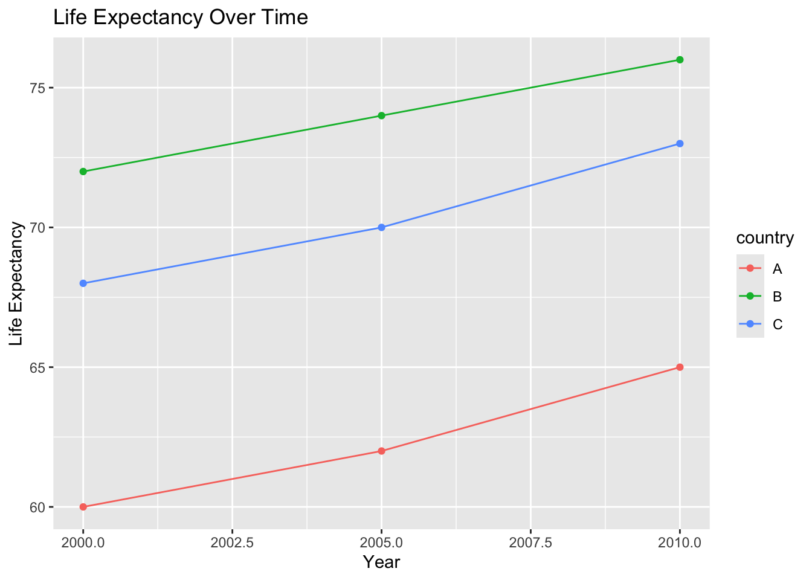

library(tidyverse)
library(gapminder)Lesson 5: Tidy Data and Reshaping
Learning goals
By the end of this lesson, you will be able to:
- Explain what tidy data are and why they matter in public health
- Identify tidy vs untidy data structures
- Reshape data using
pivot_longer()andpivot_wider() - Prepare datasets for visualization, modeling, and tables
- Maintain a reproducible data workflow in Quarto
What is tidy data?
Tidy data follow three simple rules:
- Each row is one observation
- Each column is one variable
- Each cell contains one value
Most R tools for visualization, modeling, and tables expect data in tidy format.
In public health, tidy data make analyses clearer, more reproducible, and less error-prone.
Why tidy data matter in public health
Public health datasets often come from surveys, surveillance systems, or administrative sources. These datasets are frequently not tidy when first received.
Tidy data allow you to:
- compare groups consistently
- visualize trends easily
- fit statistical models correctly
- generate tables and figures efficiently
Understanding tidy data will save you time later in the semester.
Setup
Load the packages used in this lesson.
Recognizing tidy vs untidy data
Let’s start with a tidy dataset you have already seen.
gapminder# A tibble: 1,704 × 6
country continent year lifeExp pop gdpPercap
<fct> <fct> <int> <dbl> <int> <dbl>
1 Afghanistan Asia 1952 28.8 8425333 779.
2 Afghanistan Asia 1957 30.3 9240934 821.
3 Afghanistan Asia 1962 32.0 10267083 853.
4 Afghanistan Asia 1967 34.0 11537966 836.
5 Afghanistan Asia 1972 36.1 13079460 740.
6 Afghanistan Asia 1977 38.4 14880372 786.
7 Afghanistan Asia 1982 39.9 12881816 978.
8 Afghanistan Asia 1987 40.8 13867957 852.
9 Afghanistan Asia 1992 41.7 16317921 649.
10 Afghanistan Asia 1997 41.8 22227415 635.
# ℹ 1,694 more rowsEach row is a country-year observation, and each column is a variable. This dataset is tidy.
An untidy example
Now consider a simplified untidy dataset.
lifeexp_wide <- tibble(
country = c("A", "B", "C"),
lifeExp_2000 = c(60, 72, 68),
lifeExp_2005 = c(62, 74, 70),
lifeExp_2010 = c(65, 76, 73)
)
lifeexp_wide# A tibble: 3 × 4
country lifeExp_2000 lifeExp_2005 lifeExp_2010
<chr> <dbl> <dbl> <dbl>
1 A 60 62 65
2 B 72 74 76
3 C 68 70 73Here, years are embedded in column names. This structure makes analysis harder.
Making data tidy with pivot_longer()
We can convert wide data into tidy (long) format using pivot_longer().
lifeexp_long <- lifeexp_wide %>%
pivot_longer(
cols = starts_with("lifeExp"),
names_to = "year",
values_to = "lifeExp"
)
lifeexp_long# A tibble: 9 × 3
country year lifeExp
<chr> <chr> <dbl>
1 A lifeExp_2000 60
2 A lifeExp_2005 62
3 A lifeExp_2010 65
4 B lifeExp_2000 72
5 B lifeExp_2005 74
6 B lifeExp_2010 76
7 C lifeExp_2000 68
8 C lifeExp_2005 70
9 C lifeExp_2010 73Now:
- each row is a country-year observation
yearis a variable
lifeExpis a variable
This structure is tidy.
Cleaning variable values after reshaping
The year variable still contains text. We can clean it.
lifeexp_long <- lifeexp_long %>%
mutate(
year = as.numeric(gsub("lifeExp_", "", year))
)
lifeexp_long# A tibble: 9 × 3
country year lifeExp
<chr> <dbl> <dbl>
1 A 2000 60
2 A 2005 62
3 A 2010 65
4 B 2000 72
5 B 2005 74
6 B 2010 76
7 C 2000 68
8 C 2005 70
9 C 2010 73Cleaning variables after reshaping is common in public health workflows.
When to use pivot_longer()
Use pivot_longer() when:
- multiple columns represent the same variable across time or groups
- column names contain values (years, categories)
- you want to create plots or models
Most visualization and modeling functions expect long (tidy) data.
Converting long data to wide with pivot_wider()
Sometimes you need wide data, for example for tables or reporting.
lifeexp_wide_again <- lifeexp_long %>%
pivot_wider(
names_from = year,
values_from = lifeExp
)
lifeexp_wide_again# A tibble: 3 × 4
country `2000` `2005` `2010`
<chr> <dbl> <dbl> <dbl>
1 A 60 62 65
2 B 72 74 76
3 C 68 70 73This recreates a wide format.
Tidy data and visualization
Tidy data work naturally with ggplot2.
ggplot(lifeexp_long, aes(x = year, y = lifeExp, color = country)) +
geom_line() +
geom_point() +
labs(
title = "Life Expectancy Over Time",
x = "Year",
y = "Life Expectancy"
)
This would be difficult to do with the original wide dataset.
Tidy data and modeling
Models also expect tidy data.
lm(lifeExp ~ year + country, data = lifeexp_long)
Call:
lm(formula = lifeExp ~ year + country, data = lifeexp_long)
Coefficients:
(Intercept) year countryB countryC
-873.3333 0.4667 11.6667 8.0000 Each observation is clearly defined, making interpretation easier.
Example with Gapminder
Let’s reshape a subset of Gapminder.
gap_subset <- gapminder %>%
filter(country %in% c("United States", "Canada")) %>%
select(country, year, lifeExp)
gap_subset# A tibble: 24 × 3
country year lifeExp
<fct> <int> <dbl>
1 Canada 1952 68.8
2 Canada 1957 70.0
3 Canada 1962 71.3
4 Canada 1967 72.1
5 Canada 1972 72.9
6 Canada 1977 74.2
7 Canada 1982 75.8
8 Canada 1987 76.9
9 Canada 1992 78.0
10 Canada 1997 78.6
# ℹ 14 more rowsThis dataset is already tidy and ready for visualization or modeling.
Common tidy data mistakes
Common issues include:
- mixing multiple variables into one column
- encoding values in column names
- inconsistent variable types
- reshaping data without documenting decisions
Always inspect your data after reshaping.
Reproducibility reminder
In this course:
- reshaping must be done in code
- data structure decisions should be documented
- tidy data should be used for analysis and modeling
- your workflow should be reproducible from raw data to results
Data structure is part of your scientific record.
Weekly assignment reminder
This week you will complete HW 05: Tidy Data Reshaping, where you will:
- identify a wide dataset
- convert it to tidy format
- explain why tidy data are useful
- demonstrate one visualization or summary
Key takeaways
Tidy data have one observation per row and one variable per column. pivot_longer() and pivot_wider() allow you to reshape data for analysis. Tidy data support clear, reproducible public health research.
Looking ahead
Next week, we will begin simple linear regression, using tidy data to model relationships and interpret results in a public health context.